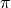
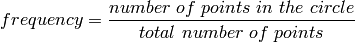
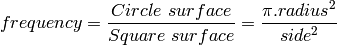
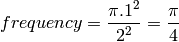
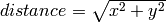
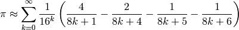

This article describes a journey with the Python programming language, and . It begins by the comparison of the procedural and functional styles of computer programming, illustrated with an algorithm approximating . The math on which the approximation relies is interesting because it only requires random numbers and simple knowledge about circles and squares.
The first part presents the math of the problem, then the second part compares the differences between the functional and procedural styles. A quick performance and complexity wall requires us to introduce the generator, which is a powerful Python object. The implementation is then adapted to use efficiently, in C, the many processors and cores available on a host. Finally, a better mathematical method is used which is faster by several orders of magnitude.
Take a square and the circle which fits into the square. A random point of the square can be either in the circle or outside of the circle. Now, the frequency for a random point to be part of the circle can be calculated as the ratio between the number of points of the circle and the total number of points. In math, this is summarised as:

The number of points in a shape is another name for the surface of the shape, that is:

To make things simple, take a circle with a radius of 1, and its containing square with a side length of 2, the frequency is simply

This means that if you can build an experiment which gives you an approximation of the frequency then an approximation of is four times the frequency for a random point of the square to be in the circle.
To build such an experiment, let’s picture the square, the circle, and two random points. The square and circle are centered on zero, the radius for the circle is 1 and it fits into the square with a side of 2. A random point is made of two coordinates, one for the horizontal position and one for the vertical position.
This figure makes it clear is that the point is in the circle if, and only if, the distance between the point and the center is smaller than the radius, which means here: smaller than one. The method to compute the distance to the center has not changed for thousands years, it is still: , where x represents the horizontal position and y represents the vertical position.
To sum up the recipe for , take a million random points in the square, count the points in the circle, divide by a million and multiply by four. Serve with a slice of lemon and a small quantity of salt.
That was for the theory, let’s implement the recipe which means let’s make a working example. Actually, we will make two working examples in the Python programming language and compare the styles.
In either styles, we will use the functions math.sqrt() and random.uniform(): the former returns the square root of the argument given as input, the latter returns a random decimal number uniformly distributed between the values of the first and the second arguments. Also, both scripts will take the number of points (the sample size) as the first argument, so we will need sys.argv: it holds the command line parameters of the script
#!/usr/bin/env python
from random import uniform
from math import sqrt
import sys
n = int( sys.argv[1] )
The procedural algorithm consists of: as many times as there are points in the sample, to take a random point, then to test whether the point is within the circle or not and when it is inside: increment a counter by one. When the loop is finished, print the counter divided by the sample size and multiplied by 4. Here it is, written in Python:
somme=0
for i in xrange(n):
if sqrt( uniform(-1,1)**2 + uniform(-1,1)**2 ) < 1:
somme+=1
print("An approximation of Pi is : %s " % (somme * 4.0 / n ))
The equivalent functional algorithm is: make a function which returns a list of random points as big a the requested sample size. Then make another function which tests if the input point is in the circle. Finally, print the length of the list of points filtered by the test function, and, as before, divide by the sample size and multiply by four:
points = lambda n : [ (uniform(-1,1), uniform(-1,1)) for i in range(n) ]
in_circle = lambda p : sqrt( p[0]**2 + p[1]**2 ) < 1
print("Another approximation of Pi is: %s " %
( len( filter( in_circle, points( n ) ) ) * 4.0 / n ))
Now if we test it in a command line, it does approximate , it gets more precise with more points but it is rather slow:
~$ ./procedural.py 1000
Pi ~ 3.112
~$ ./procedural.py 100000
Pi ~ 3.14192
~$ ./functional.py 500000
Pi ~ 3.140128
In your opinion, which style fits the job best? I would say the procedural style is a sequence of small operation, without much structure. The functional style better split the problem into simpler bits whose integration solve the problem .
When comparing the performance of the two solutions, we hit a problem which is an opportunity to present the Python magic called generator. Let’s execute the script with 200 000, one million and five million points in the sample:
~$ alias time='/usr/bin/time --format " duration: %e seconds"'
~$ test_it () { for i in 200000 1000000 5000000; do time $1 $i ; done ; }
~$ test_it ./procedural.py
Pi ~ 3.13974
duration: 0.56 seconds
Pi ~ 3.141572
duration: 2.19 seconds
Pi ~ 3.1412144
duration: 10.97 seconds
~$ test_it ./functional.py
Pi ~ 3.13992
duration: 0.61 seconds
Pi ~ 3.141356
duration: 3.39 seconds
Pi ~ 3.1416272
duration: 32.71 seconds
~$ # Do not hesitate to send the stop signal if it takes too long
~$ # on your computer: Ctrl-C or Ctrl-Z
Mmh, the functional version takes longer and it does not scale. The problem stems from the fact that points() and filter() make up lists of several million elements, all stored in the laptop memory where the script was tested, which is too small to handle them all efficiently. It is no use to store them all, in this problem, we only need one at a time, as the procedural algorithm does.
A solution to avoid the waste of memory is to use is a generator , it is a kind of Python magic which behaves like a list, but which generates the element of the list on the fly when they are requested by the function which manipulates the generator. They are not stored, it is on demand. This technique is also called lazy evaluation. This is the goal of the the yield() Python statement, if there is a need to create its own custom generator.
The points() function is slightly modified: this expression, which returns a list
[ (uniform(-1,1), uniform(-1,1)) for i in xrange( size ) ]
is substituted by this expression, which returns a generator:
( (uniform(-1,1), uniform(-1,1)) for i in xrange( size ) )
The filter() function is substituted by its generator-returning counterpart ifilter() in the itertools module. One last change: a generator has no length, so len() is substituted by a trick: sum a list of ones for each point in the circle:
shows that lazy functional implementation operates with a performance boost of 14%, 25% and 55% over the previous functional implementation:
~$ test_it ./harder_better_stronger_faster.py
Pi ~ 3.13988
duration: 0.54 seconds
Pi ~ 3.143804
duration: 2.62 seconds
Pi ~ 3.141496
duration: 13.10 seconds
At this point, the two styles are technically rougly equivalent, the functional style is 10% slower than the procedural counterpart. Maybe, those 10% are the small efficiencies that Knuth was telling us about: “we should forget about small inefficiencies, say about 97% of the time: premature optimization is the root of all evil”.
Let’s try to do exactly that: let’s optimize the implementation of the same algorithm.
It is interesting to note that all the previous scripts run on only one core even if the host features many processors and cores. Python makes it easy with the multiprocessing module to run functions into their own separate system process which are dispatched by the kernel on the available processors and cores.
In the following version of the script, four processes will be run, each handling a fourth of the requested iterations. The multiprocessing make the Queue available which is reachable by each processes and safe for concurrent read and write access.
processpool(function, args) takes a function and its parameters as an input and returns the list of results obtained by running the function, in four separate subprocesses.
from multiprocessing import Process, Queue
n = int( sys.argv[1] )
numproc = 4
def pi(n):
somme=0
for i in xrange(n):
if sqrt( uniform(-1,1)**2 + uniform(-1,1)**2 ) < 1:
somme+=1
return 4*float(somme)/n
def processpool(func, *args):
q = Queue()
processes = [ Process(target=lambda _:q.put(func(_)),args=args)
for i in range(numproc) ]
for p in processes: p.start()
for p in processes: p.join()
return [ q.get() for _ in range(q.qsize())]
subprocess_results = processpool(pi,n/numproc)
print "An approximation of Pi with 4 processes: %s" %(
sum(subprocess_results)/len(subprocess_results))
Let’s time this version:
~/github/functional$ test_it ./procedural_with_processes.py
An approximation of Pi with 4 processes: 3.14208
duration: 0.28 seconds
An approximation of Pi with 4 processes: 3.142696
duration: 1.14 seconds
An approximation of Pi with 4 processes: 3.1417456
duration: 5.43 seconds
The durations are exactly halved when compared to procedural.py, the two cores of the Intel Core 2 Duo, on which this article is edited, were effectively used.
Python code is transformed on execution into byte compiled code, which is composed of commands interpreted by the Python virtual machine. The Python virtual machine is a compiled software written in C which directly talks to the processor. For some demanding computing uses, such as this approximation of , this interpretation is suboptimal .
The identification of the command line argument, the result printing and the split into processes are only done once so their impact on performance are negligible, it is very practical to do it in Python. In our example, the hard work in this script is the pi function, which could not be simpler in terms of signature: it requires an int, returns a float, raise no errors, and make no side effects. We can write the pi function in C so that, when compiled, it is directly understood by the processor, sidestepping the Python virtual machine. Here are the steps involved:
a C function called pi is written in a file called pimodule.c:
float pi(int n){
double i,x,y,sum=0;
srand(rdtsc());
for(i=0;i<n;i++){
x=rand(); y=rand();
if (x*x+y*y<(double)RAND_MAX*RAND_MAX)
sum++; }
return 4*(float)sum/(float)n; }
int rdtsc(){ __asm__ __volatile__("rdtsc"); }
A wrapper function for the pi function, which matches Python interfaces, is defined. This wrapper receives the arguments in the form of Python objects that it transforms to input argument for the C function in the correct format: here, a simple int. The wrapper also builds an Python float object from the C float approximation of Pi returned by the pi C function:
static PyObject * pi_pi(PyObject *self, PyObject *args) {
const int n;
if (!PyArg_ParseTuple(args, "i", &n))
return NULL;
return Py_BuildValue("f", pi(n)); }
The non standard type such as PyObject are available through the inclusion of the <python2.6/Python.h> headers.
The methods exported to Python are declared in an array of PyMethodDef:
static PyMethodDef PiMethods[] = {
{"pi", pi_pi, METH_VARARGS, "Simple Pi Approximation"},
{NULL, NULL, 0, NULL} /* Sentinel */ };
For each method described in the array, the first element is the method name in Python, the second element is the pointer to the C function, the third argument specifies if the Python method should accept variable arguments and keyword arguments. Here no keywords arguments are possible, only variable arguments. The last element is the docstring for the method.
An initialization function is written for the package. This function will be executed when the module is imported in the Python interpreter:
PyMODINIT_FUNC initpi(void) {
(void) Py_InitModule("pi", PiMethods); }
That’s it for the pimodule.c. It is ready for compilation.
A separate setup.py file specifies the compilation and deployment of this C file into a package available in the Python path:
from distutils.core import setup, Extension
mod = Extension('pi', sources = ['pimodule.c'])
setup (name = 'pi',
version = '0.1',
ext_modules = [mod],
description = 'This is simple method for approximating Pi')
Building and installing the module is straightforward:
~$ python setup.py build
~$ sudo python setup.py install
~$ python
>>> import pi
>>> help(pi)
[ ... ]
pi(...)
Simple Pi Approximation
>>> pi.pi(1000)
3.2040000
The previous script can be copied and pasted with only a few modifications: instead of declaring the pi function, it now needs to be be imported from the pi module:
...
from pi import pi
subprocess_results = processpool(pi,n/numproc)
...
This multiprocess C version shows the following performance:
~$ test_it ./procedural_in_c.py
An approximation of Pi with 4 processes: 3.14168
duration: 0.09 seconds
An approximation of Pi with 4 processes: 3.143028
duration: 0.07 seconds
An approximation of Pi with 4 processes: 3.1415872
duration: 0.18 seconds
The computation is accelerated by a factor up to 30 over the previous version is pure Python. This is not fantastic but it is indeed much more efficient. When compared to Python, C does shine in the processing of numbers.
If the problem really was computing , its Wikipedia page has several better methods. Here is a seriously fast approximation known as the Bailey-Borwein-Plouffe formula :

This translates into the bbp function, below, in Python, which is correct for the first 13 digits in only ten iterations while previous methods needed millions of iterations for the same results.
>>> bbp = lambda n: sum( 1./(16**k)*(4./(8*k+1)-2./(8*k+4)-1./(8*k+5)-1./(8*k+6))
... for k in xrange(n) )
>>> print bbp(2)
3.14142246642
>>> print bbp(10)
3.14159265359
>>> import math
>>> bbp(10) - math.pi < 10**(-14)
True
Timer is a class which take a callable as the argument. The method timeit will return the duration in seconds for one million executions of the callable.
>>> from timeit import Timer
>>> Timer(lambda:bbp(10)).timeit()<20
True
Obtaining the 13 correct digits of can be done in less than 20 microseconds in pure Python with a good algorithm. And now, on to something fantastic : On December 31st, 2009, about 2700 billion decimal digits of Pi were computed using a single desktop computer. This is presently the World Record for the computation of Pi. Kudos to Fabrice Bellard. He combined a fast math method, with hardware optimization at the processor level.
Mon, 19 Apr 2010